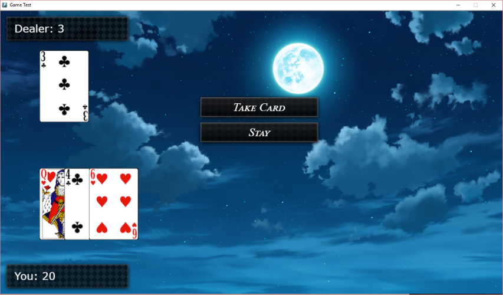

二十一点
二十一点T

his is an example for a very simple version of the card game "Black Jack".
You can find the Black Jack example if you create a new project in VN Maker and select "Black Jack Example" as template.
规则
游戏结果阶段
Let's go through that phases step by step.
准备阶段
The game background is created, the point counters are reset to 0 and both players, you and the dealer, draw one card each.
玩家阶段
You have two choices: You can draw another card or you can stay. There are 52 different cards and 312 cards in total in the game. Each card gives you a certain amount of points depending on what kind of card it is. For Example: A "Hearth 3" will give 3 points and a "Hearth Ace" will give 11 points. You have to try to get closer to 21 points than the dealer. But if you get above, you will immediately lose the game.
If you are satisfied with your points you can select "Stay", then the Dealer will start drawing cards.
庄家阶段
The dealer will now start drawing cards until he reaches 16 or more points.
If you have the same amount of points as the dealer, its a tie.
After choosing the winner, the game will restart and jumps back to the first game phase.
实现
Before trying to understand the implementation of the Black Jack game, make sure that you read and mastered all the other topics of the Beginner's Guide. Each Scene and each Common Event has comments to explain you what is going on. So try to go through each Scene and each Common Event step by step and try understand the game logic.